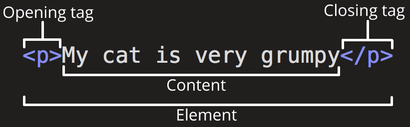
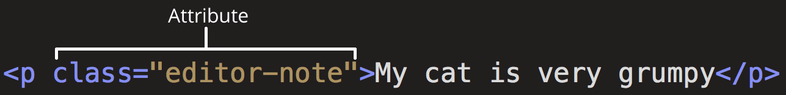

Работа с осовными HTML тегами
task 01
Создайте на вашей странице 5 абзацев с каким-нибудь текстом.
Посмотрите, как эти абзацы будут выглядеть в браузере.
Небольшое отступление о регистре и пробелах
- Многие компьютеры, в частности веб-серверы, чувствительны к регистру. Так, например, если вы положили изображение на свой веб-сайт в test-site/MyImage.jpg, а затем в другом файле вы пытаетесь вызвать изображение как test-site/myimage.jpg, это может не сработать.
- Браузеры, веб-серверы и языки программирования не обрабатывают пробелы последовательно. Например, если вы используете пробелы в имени файла, некоторые системы могут отнестись к имени файла как к двум именам файлов. Некоторые серверы заменяют пробелы в вашем имени файла на "%20" (символьный код для пробелов в URI), в результате чего все ваши ссылки будут сломаны. Лучше разделять слова дефисами, чем нижними подчёркиваниями: my-file.html лучше чем my_file.html.
Говоря простым языком, вы должны использовать дефис для имён файлов. Поисковая система Google рассматривает дефис как разделитель слов, но не относится к подчёркиванию таким образом. По этим причинам, лучше всего приобрести привычку писать названия ваших папок и файлов в нижнем регистре без пробелов, разделяя слова дефисами, по крайней мере, пока вы не поймёте, что вы делаете. Так в будущем вы столкнётесь с меньшим количеством проблем.
Внутренние ссылки
- Element
- Attribute
- Remark
Element
-
Открывающий тег (Opening tag): Состоит из имени элемента (в данном случае, "p"), заключённого в открывающие и закрывающие угловые скобки. Открывающий тег указывает, где элемент начинается или начинает действовать, в данном случае — где начинается абзац.
-
Закрывающий тег (Closing tag): Это то же самое, что и открывающий тег, за исключением того, что он включает в себя косую черту перед именем элемента. Закрывающий элемент указывает, где элемент заканчивается, в данном случае — где заканчивается абзац. Отсутствие закрывающего тега является одной из наиболее распространённых ошибок начинающих и может приводить к странным результатам.
-
Контент (Content): Это контент элемента, который в данном случае является просто текстом.
Элемент(Element): Открывающий тег, закрывающий тег и контент вместе составляют элемент.

Attribute
Элементы также могут иметь атрибуты, которые выглядят так:

Атрибуты содержат дополнительную информацию об элементе, которую вы не хотите показывать в фактическом контенте. В данном случае, class это имя атрибута, а editor-note это значение атрибута. Класс позволяет дать элементу идентификационное имя, которое может позже использоваться, чтобы обращаться к элементу с информацией о стиле и прочих вещах.
Атрибут всегда должен иметь:
- Пробел между ним и именем элемента (или предыдущим атрибутом, если элемент уже имеет один или несколько атрибутов).
-
Имя атрибута, за которым следует знак равенства.
-
Значение атрибута, заключённое с двух сторон в кавычки.
Обратите внимание на то, что теги <b> и <i> следует использовать внутри какого-либо другого тега, например абзаца. В этом случае абзацы создают общую структуру страницы (абзацы и заголовки), а указанные теги делают жирным или курсивом отдельные кусочки текста.